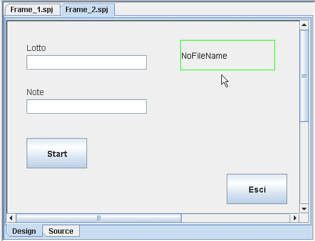
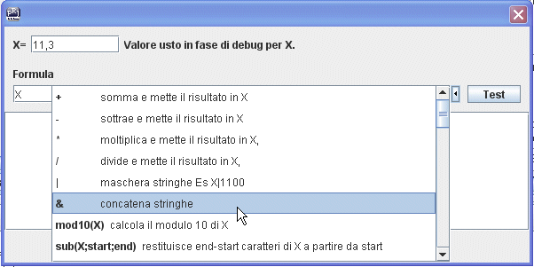
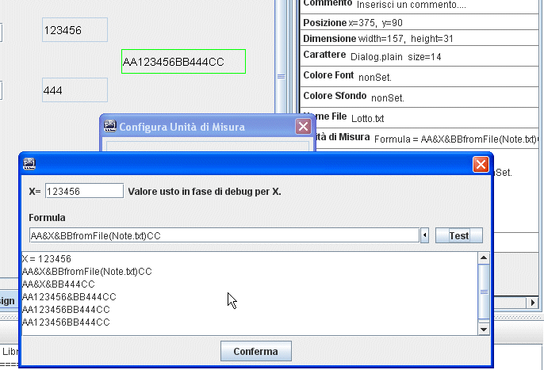
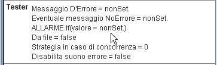

Monitor di FileConsente di controllare e visualizzare il
contenuto di un file. "Controllare" vuol dire
che mediante un monitor di file è possibile analizzare
il valore contenuto nel file e in base a tale valore
"inibire" delle azioni, disabilitando i
pulsanti relativi (vedi in seguito disbilitare o segnare
azioni). "Visualizzare" vuol dire che nel
monitor di file, verrà semplicemente scritto il valore
contenuto nel file, oppure un valore opportunamente
elaborato per renderlo addatto ai nostri scopi. Ad
esempio aggiungendo kg alla fine oppure eliminando i
decimali (vedi in seguito Unità di misura).
|
(3)  |
Ora bisogna configurare il "Monitor di File" segnalando il file che bisogna monitorare. |
Per usare il componente Monitor di File
bisogna settare il file che si intende monitorare. Per
continuare l'esempio HelloWorld monitoriamo il file Lotto.txt
cliccando dove mostra il puntatore del mouse.
|
Poi facciamo la stessa cosa con un
secondo monitor di file che metteremo alla sinistra delle
Note e che monitora il file Note.txt
|
Unità di misuraIn molti casi è utile aggiungere al valore monitorato un prefisso o suffisso. Ad esempio kg. Oppure è necessario fare una formattazione per settare il numero di interi e decimali. Tutto ciò può essere fatto con la finestra di configurazione dell'unità di misura. In ogni caso il valore presente nel file non verrà modificato, ma sarà solo la sua visualizzazione che sarà manipolata.
|
Simbolo Unità di misuraQuesta finestra permette di aggiungere del testo a destra del valore presente nel file. Il tipico utilizzo può essere quello di aggiungere il simbolo "kg" al valore peso contenuto in un file. |
FormulaConsente la massima flessibilità in termini di manipolazione. Con la formula è possibile non solo aggiungere del testo come simboli a destra o a sinistra, ma consente anche di elaborare il valore moltiplicando, dividendo, sommando e più in generale applicando una delle possibili funzioni disponibili in BuilderOne. La lista di tali funzioni è continuamente arricchita. .
|
| Una finestra con una barra di scorrimento laterale,
consente di "scorrere" tutte le possibili
funzioni e il relativo help. Quando la funzione viene
selezionata, essa verrà automaticamente aggiunta alla
finestra. Bisognerà solo impostare gli eventuali
parametri.  |
| Il valore X rappresenta il valore presente nel file. Tale valore verra' riletto al momento dell'esecuzione, tutte le volte che si rientra nel frame e dopo una qualunque azione causata da un pulsante. In fase di test è possibile modificare il valore inserendone un altro nella finestra in alto a destra. Le formule possono essere anche complesse, nel senso che è possibile usare più funzioni e parentesi tonde. E' inoltre possibile prelevare altri valori da file con le fromFile(fileName) dove fileName è il nome del file comprensivo di estensione se il file è contenuto nella cartella Data del progetto, altrimenti deve essere il nome del file compreso di percorso. |
| Per mostrare come funziona la formula nel monitor di
file useremo l'esempio HelloWorld e aggiungeremo un
monitor di file a quelli già presenti. Questa volta
però useremo una formula per mostrare il valore Il nuovo monitor di file lo collegheremo al file Lotto.txt, questo vuo dire che la X conterra il valore di tale file.  |
| Come si può esservare dopo aver premuto il pulsante
"Test", viene mostrato il risultato dell'elaborazione.
La X vale 123456, perche è il contenuto del file Lotto.txt,
tale valore viene concatenato (&) al testo AA
ottenendo, AA123456 poi ancora una concatenazione (&)
con il testo BB, e quindi otteniamo, AA123456BB poi
aggiungiamo il valore proveniente dal file Note.txt, AA123456BB444
e in fine concateniamo il testo CC. Tutto questo sarà solo una visualizzazione. nessun valore nei file verra' manomesso. |
TesterQuesta sezione racchiude le opzioni che consentono di fare il controllo del contenuto del file e di intraprendere delle azioni in base al valore. Le azzioni che possono essere intraprese sono quella di mostrare un messaggio d'errore, di far sentire un suono d'errore, quella di disabilitare dei pulsanti, o quella di segnalare dei pulsanti.  |